综述
之前使用ExtJS时遇到一个问题：为什么依次设置多个组件的可见性界面会卡顿？在了解HTML的dom操作相关内容的时候也好奇这个东西到底是怎么回事，然后尤其搞不懂CSS和Html分管样式和网页结构，这个东西是怎么实现的，是不是很复杂？
带着这些问题，看了一些文章，尤其是听说了Redraw和Reflow的概念之后，开始研究了dom的性能调优，最近看了一篇《how browser work》，觉得写得很详细，结合之前看的文章，解决了不少的困惑，写一篇对这个文章的读后总结，顺便记下来自己掌握的一些浏览器性能的知识。
浏览器的总体结构
浏览器主要部件包括：
- 用户界面：包括浏览器输入栏、前进、后退、主页等非网页展示区。
- 浏览器引擎：用户交互和呈现引擎之间的桥梁。
- 呈现引擎：实现dom和Css计算和渲染功能的部分，也是本文的主题。
- JS解释器。parse和执行JS代码。
- 数据存储，数据存储的持久层。
具体结构如下图所示：
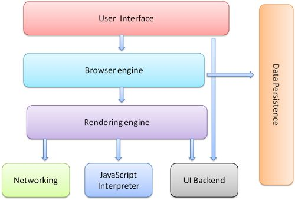
Figure : Browser components
呈现引擎(rendering engine）
呈现引擎的工作就是呈现，包括呈现HTML/XML/pdf/image/CSS等等，当然我们主要关心呈现HTML+CSS这两个部分。
呈现引擎这个名字我们可能不熟，但是WebKit、Blink大家应该听过，Safari的呈现引擎就是Webkit，Chrome目前的呈现引擎是Blink，是Webkit的一个分支，另外Firefox也有自己的呈现引擎Gecko，IE的是Trident（本文写作的时候应该没有Edge）。本文介绍呈现引擎主要围绕Webkit和Trident来讲，会涉及到两者的异同，也就是Chrome、Safari和Firefox。
呈现引擎基本工作流程
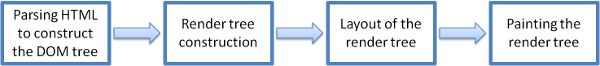
如上图所示，呈现引擎从网络中收到资源文件后，首先Parse HTML文件，生成Dom树，然后开始parse外部和内部的CSS样式，生成CSS规则组，然后以Dom树为基础生成Render tree，render tree虽然没有渲染在页面上，但包含了足够的信息render出一个像素页面。因此调用render tree的layout方法开始根据dom tree结构，上面每个元素的 display/width/height/minwidth/minheight/maxwidth/maxheight/border/padding/margin/position/float/left/right/top/bottom等layout相关的属性计算出对应元素的真实位置信息，在此基础上调用render tree的paint方法依据位置排布按特定顺序逐个绘制组件。
Webkit和firefox Gecko呈现引擎的工作流图
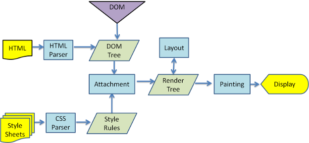
Figure : WebKit main flow
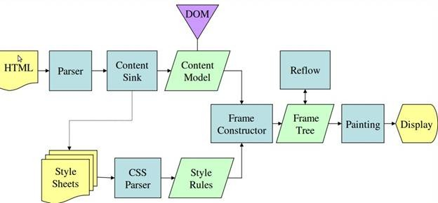
Figure : Mozilla’s Gecko rendering engine main flow
可以看出总体流程大同小异，更多的是名词叫法的差异。
本文随后将按照上面的总体流程，分为parse（包括dom tree和style rules生成）、render tree（frame tree）、layout(reflow)&paint（draw）三个大章节介绍呈现引擎。
Parse: Dom tree and style rules
Parse术语浅析
对于一个操作，包括编程语言和方程、公式，作者首先以文本形式写成，但要计算机理解并执行，就需要按照一定语法写成，这样计算机才能根据一定的原则，把文本转化成结构化的操作树，然后再根据这些操作来执行命令，从文本转化为操作树的过程即Parse。
例如我输入了2+3-1这段文本，将会返回如下parse tree：
具体来说，2+3-1能parse成结构化的操作，分成了两步，第一步是词法分析，第二步是语法分析。
词法分析
词法分析就是根据这门语言、方程的特点，将文本中的一个个的字符，逐个提取成这个语言的合法词语的过程，在这个示例中，就是把2+3-1提取出2,+，3，-，1五个词的过程。如果是20+30-11,就得能提取出20，+， 30，-，11；如果是20+-1就得提取出20，+，-，1。
我们看到了最后一个式子的错误，这个不归词法分析管，后面语法分析负责找出这类问题。
词法分析具体的实现一般是通过正则表达式，正则规定出语言所有的操作、变量、各种类型的值的正则，词法分析器逐个去匹配提取出词语。
词法分析正则表达式：INTEGER: 0|[1-9][0-9]*
PLUS: +
MINUS: -
语法分析
在词法分析基础上，语法分析就可以进行了，语法分析比词法分析复杂一些，首先需要指定我们的语言的语法规则：
- 一个块级语句是表达式，数值和操作符
- 表达式数量任意
- 表达式是指数值+操作符+数值的组合
- 操作符包括“+”和“-”
依据这些规则设计出语法分析器，语法分析器判断词法分析器输入的词拼起来是否满足语法规则，满足后构建出parse tree。
语法分析规则：
expression := term operation term
operation := PLUS | MINUS
term := INTEGER | expression
context free grammer
一般的语法分析都可以通过BNF的格式来实现，上述的语法规则示例就是一种BNF。
能够只通过单纯的BNF就完全描述清楚并实现的语法被称作”context free grammer”，也就是不依赖上下文的语法，只要当前这段语句分析了就能有确定的意思，一个词汇不会有两个意思。
我理解这个“确定的意思”并不包含运行时层面的一些东西，主要是指语法上一个词汇会不会有歧义，没有歧义的就是context free grammer。有歧义的就不是，parse的过程就会更复杂，例如HTML就不是，后续会讲到，所以在这里提这个概念。
HTML Parser
not context free
具体到 HTML Parser，首先就是Html的语法不是context free的，为什么呢？
首先XML是Context free的，每一个标签都需要闭合，标签之间也有明确的包含关系，使每一个标签都有确定的含义，所以Html不是context free的原因不在于它的基础语法，而是因为它的包容性。
比如允许br标签不闭合，甚至允许用</br>和<br>两种写法，比如标签之间没有形成嵌套关系<div><p></div></p>也不会报错，会推断修复这类问题。
DOM
Dom元素我们都熟悉，在浏览器调试窗口element一栏就可以看到我们的html+JavaScript生成的Dom结构（这里只说Html）。
所谓HTML的parsing过程就是把HTML的语法写出的文本转化成Dom tree的过程，因此用html标记语言以及JavaScript操作Dom元素的过程也被称作Dom编程。
例如下面的代码会被parse成下面的Dom tree。
<html>
<body>
<p>
Hello World
</p>
<div> <img src="example.png"/></div>
</body>
</html>

Dom的官方规范见这个链接： https://www.w3.org/DOM/DOMTR
parse流程
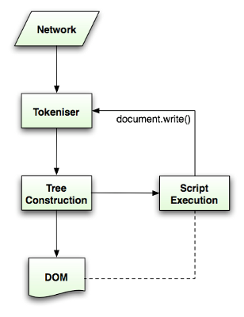
执行parse的流程也是词法分析和语法分析，tokeniser即词法分析，tree construction为语法分析部分
tokeniser
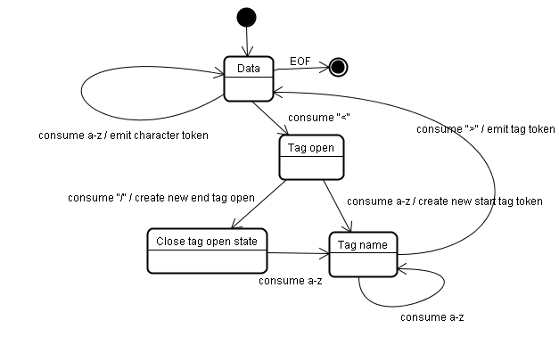
如上图所示，主要过程就是定位出每一个尖括号包裹的标签，包括打开标签和关闭标签分别捕获
tree construction

通过找到的标签，给每个打开标签添加到树中，直到闭合标签之前的其他标签成为自己的children，如果有特殊情况特殊处理。
CSS parsing
同HTML不同，CSS是context free grammer，在此简单列出一组CSS的词法分析和语法分析的规则，只做简要介绍
词法分析：
comment \/\*[^*]*\*+([^/*][^*]*\*+)*\/
num [0-9]+|[0-9]*"."[0-9]+
nonascii [\200-\377]
nmstart [_a-z]|{nonascii}|{escape}
nmchar [_a-z0-9-]|{nonascii}|{escape}
name {nmchar}+
ident {nmstart}{nmchar}*
词法分析也是基于正则表达式，定位CSS文本文档中一个个的关键词，其中name是id，ident是classname，从中可以看出css的classname允许输入哪些字符，否则会报错。
语法分析：
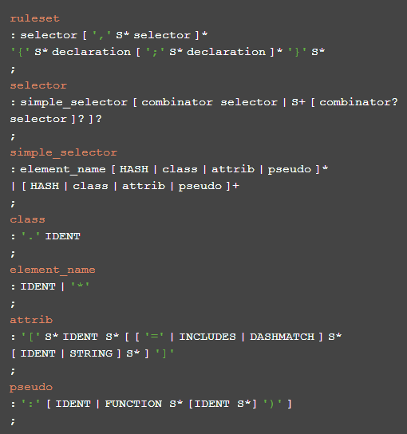
这个比较抽象，看一组例子，一个CSS样式文本和命中的规则：
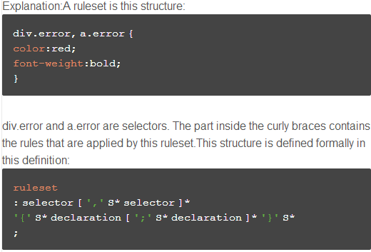
Webkit CSS Parser
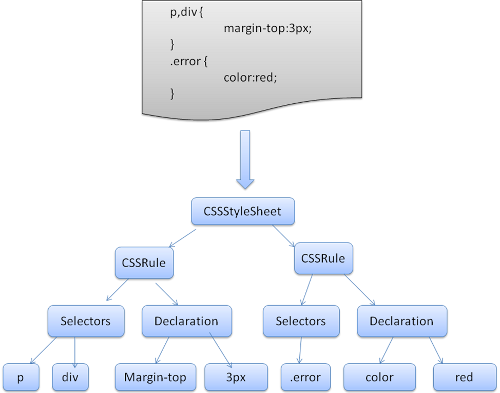
如上图所示，一个webkit parse出的style rules也是一个树形结构，第二层是一个一个的CSS rule，每个rule都有分支，用来存放所有的selector和存放属性的声明。
render tree（frame tree）
从dom tree到render tree
经过了parse，我们知道已经得到了dom tree和style rules，接下来的过程就是从将两者合并成一个render tree，并且计算出真正render的必要信息。
要理解这句话，就要说清楚到dom tree这一步进展到了什么程度，到render tree这一步又进展到了什么程度。因为从总体上来说，构建出Dom->rendertree->layout->draw是很抽象的说法，具体到比如width有个width:30%，在哪一步计算出了绝对宽度值，到哪一步真正给dom对象设置了这个宽度，到哪一步真正把这个对象按照这个大小布置出来了，布置出来之后什么时候绘制出来的。
下面首先简单说一下我对dom tree和render tree分界线的理解，也就是dom tree和style rules这两个东西都包括什么，进展到了哪一步：
dom tree实现了一个树形的dom object，一层一层的都从HTML文档转化为HTMLObject，并且树形都转化成了HTMLObject的属性。style rules（css rules）把CSS文档转换成了一组规则对象，每个对象都包含了对应的css selector和css属性和值，从文档变成了对象。然后就没有了，这个对象还没有真正开始计算样式的实际值，没有真正开始计算最终绘制颜色像素相关的东西。
这个计算实际值、计算最终绘制需要的一些内容的过程就是合并这两者构建render tree的过程。抽象来说，render tree包含了最终layout和paint（或者叫reflow和redraw）需要的必要信息，而且都各种样式都计算出了最终的值，所谓layout和paint的过程也是调用了render tree上元素的layout和paint两个方法，一个典型的render tree对象类如下所示：
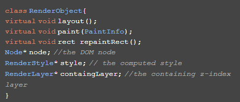
render tree和dom tree的关系
render tree和dom tree不是一对一的关系，例如display:none的element不会体现在rendertree中；但是属性hidden会绘制render tree object；select dom元素会绘制3个render object。
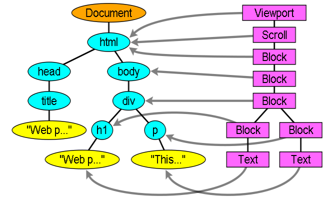
dom tree 到render tree
计算CSS合并Dom和css rules
要将CSS和Dom合并面临着三个大问题：
- 样式表可能十分庞大，可能另内存吃紧
- 为每一个dom元素遍历样式表会是非常浩繁的工程
- css样式可能拥有很复杂的selector不便于对应
共享样式信息
浏览器进行了一些设计来解决这些问题，首先是共享样式信息。
如果兄弟元素满足了一系列的条件，那么他们就共享样式对象，不用重复计算。
Firefox rule tree
另外，为了解决上述问题的1和3，firefox设计出了一种rule tree+style context tree的结构。
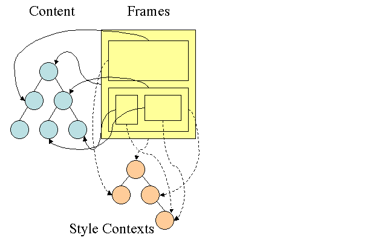
这一点和webkit有所不同，webkit含有类似的东西，但没有生成这样完整的tree。
rule tree+style context的实现有点复杂，主要目的是通过这样的一颗树结构化保存计算过得样式信息，用于复用，提高性能。我也没有特别搞懂，因此不详细介绍理论，直接上个例子：
有如下html：
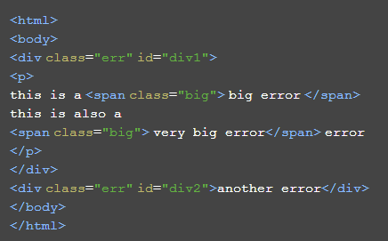
如下Css样式表：
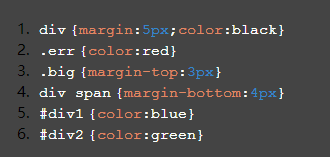
依据html生成的dom tree，取到一个dom节点后，便利样式表招到匹配的样式，根据匹配程度由低到高，由上到下列出这个dom所有匹配的样式，生成rule tree：
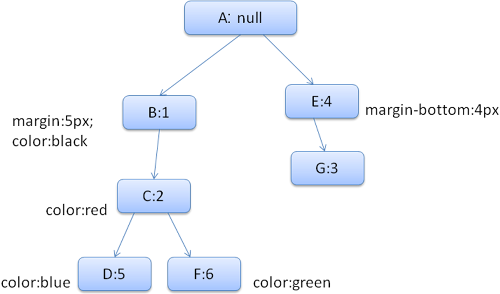
例如针对第一个div元素，从上到下生成了B、C、D三个节点依次代表了1/2/5三条规则，优先级从低到高；这里顺便介绍一下为什么要生成这个tree，为什么知道优先级从低到高了，还要保留低优先级的：
这只是一个规则的从低到高的排列，并不是具体的样式属性的，有些高优先级里没有配置的属性，可能匹配的低优先级规则里有配置
全部保留便于复用，假设此时开始找第二个div元素的匹配属性，找到了1,2,6,此时1,2已经在rule tree上，只需要再添加一个6就可以了，上面两个做到了复用。
给一个元素在rule tree上生成了一个从上到下（优先级从低到高）的path之后，就可以给元素生成对应的style context了。具体生成的style context如下图所示：
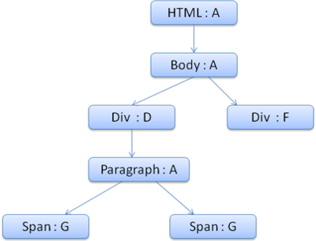
还是拿第一个div举例子，在生成其 style context的时候，就把匹配第一个div元素的path最下面的样式作为该元素的指定样式，这就是style context。
然后根据style context和rule tree构建style structs。style structs基于样式属性的维度，也就是每一个属性构建一个struct来组成structs。在本例中针对第一个div构建color属性，规则D中有color，搜索结束使用这个color的值；针对它的margin属性则不同，规则D中没有关于margin的配置，向上到C中也没有，知道B中找到了执行B中的margin值。
还有额外的情况就是找到path的顶层了也没有，也就是没有显式声明的样式针对这个属性，那么久根据该属性的具体情况，如果是继承式的属性，就再去看父元素的path，如果不是继承性的属性，就直接取该属性的默认值。
样式表计算的优先级
来源的优先级
从低到高排列如下
- Browser declarations
- User normal declarations
- Author normal declarations
- Author important declarations
- User important declarations
其中Author是指网页的作者，User是指在页面上修改属性的人，这个对我们日常调试有帮助，说明已经配置的属性，如果不加important无法覆盖网页加载（作者）样式。
Specify
优先级从高到低：
- style属性里的样式
- ID中的样式
- class等属性中的样式
- 元素标签的样式。
以上先计算高优先级的属性出现的次数，如果一样，再计算低优先级的属性出现的次数
layout(reflow)&paint（draw）
从render tree到layout&paint
在render tree构建完成之后，一个新的tree形成了，其中的每个元素都包含了所有最终的样式属性的引用，值都计算出了最终值，不是相对值；但是并没有真正的拿这些属性去绘制图形和放置图形的位置，只是具有了所有绘制图形所需的完善的信息，不需要再对这些数值信息进行加工了。
此时调用layout方法即可以计算出每个元素的布局位置和尺寸等信息，包括z-index的信息，调用paint方法就可以计算出元素的最终像素绘制信息。
layout
正如上文所说，layout之前并没有真正计算出元素的坐标和尺寸、z-index等信息，layout将通过display、width、height、postion、float、left、right、min-height、max-height等尺寸相关的属性，计算出元素所在的x轴Y轴Z轴的信息和最终的尺寸信息。
dirty bit system
计算完尺寸信息之后，dom结构会不断变化，呈现引擎有一个标记脏值的方法，通过标记新增或者改变属性的元素为dirty的方法，在下一次layout的时候不必全部layout，而是只layout标记为dirty的元素、元素的子元素和元素的迭代向上父元素（具体情况视改变的属性不同而不同）。具体来说，如果改变了全局的字号或者直接改变了viewport的大小，会触发全局的layout，否则改变了元素的尺寸、字号等，则会触发局部的layout；还有一些属性改变不会触发layout，会在paint中说明。
Layout过程
父renderer计算出自己的宽度。
放置子元素的位置，调用子renderer的layout（包括全局layout、子元素dirty等情况），计算出子元素的宽度、高度。
父元素利用子元素累计的高度算出自己的高度（也可能需要重算自己的宽度），调用父元素的父元素给父元素自己设置高度。
将dirty位置false。
Painting
在layout之后，可以对rendertree的成员进行painting。
Painting和layout一样，有局部和全局两种情况。全局不用多说，说一下局部Painting的情况。
根据render tree的变化，将绘制的需要重新绘制的renderer置为disable，操作系统会认为这个绘制区域已经过期（dirty），操作系统会把多个这样的区域结合起来，一起触发一次paint事件，然后调用paint 线程执行重绘。
重绘顺序
重绘针对painting阶段的属性（非layout相关属性）会按照固定的顺序操作，因此会按照逆序将对应的属性压入Stacking context栈，从后向前弹出执行，堆栈内容从后向前如下：
- background color
- background image
- border
- children
- outline
最小改变
在dom元素或属性变更后，，浏览器会优化尝试重绘（paint）或重排（layout）最少的内容。如果改变了一个元素的颜色或背景色，将只会repaint这个元素；如果改变了元素的position将不得不导致重排+重绘该元素及其子元素，有时候还需要重排其兄弟元素；添加dom元素也会导致自己及其父元素的重绘和重排。如果改变Html字体将会清空render相关缓存并对整个页面重排和重绘。
呈现引擎（rendering engine）线程
呈现引擎一般是一个单独的线程，他们通常都是该页面的主线程，而网络交互部分则会根据请求树简历多个网络线程（2-6个）。主线程是一个无限循环，监听需要重绘和重排的事件作出对应的render。